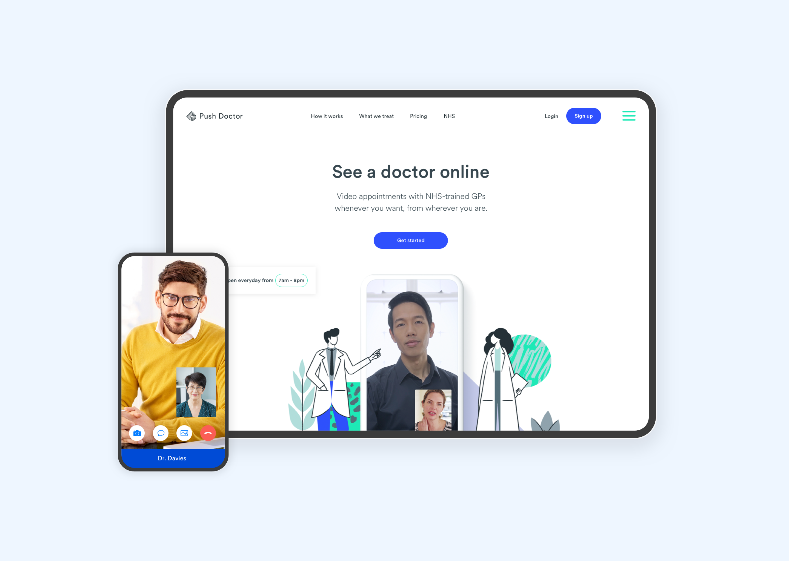
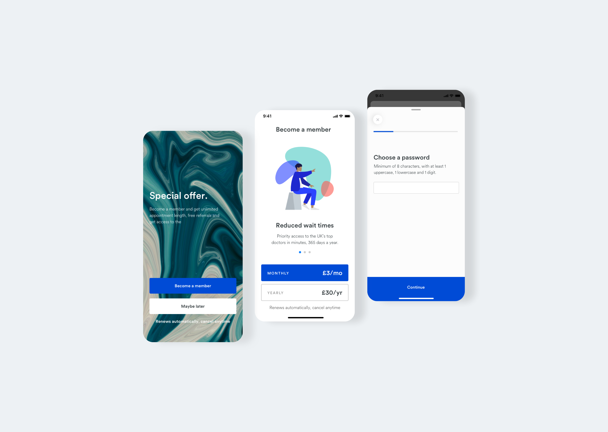
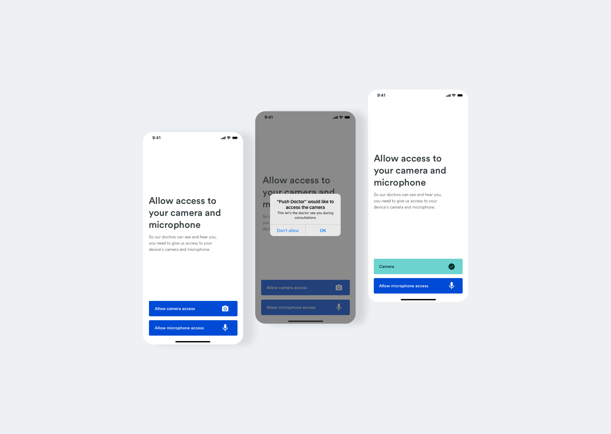
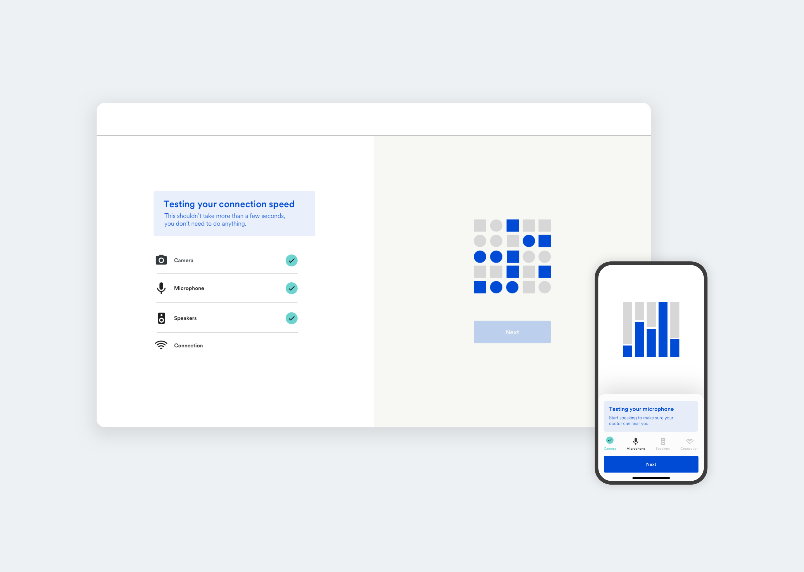
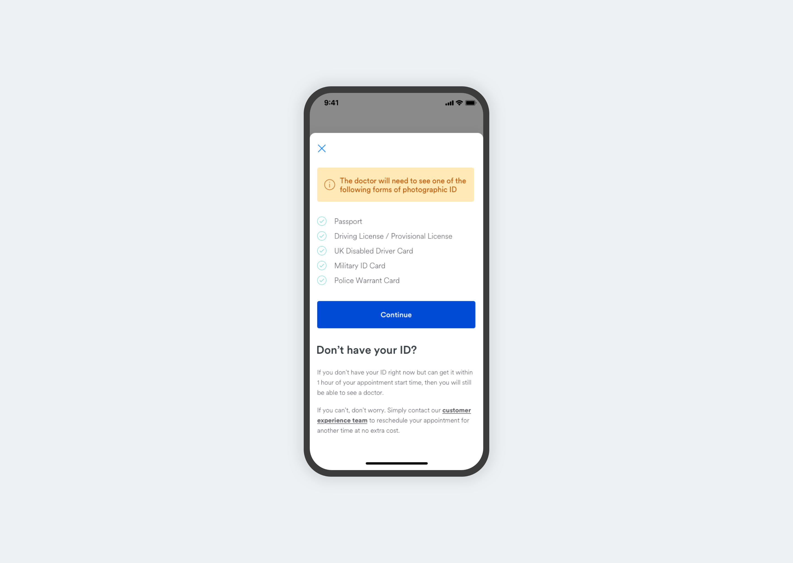

The Problem
Tools used:
Sketch, Overflow, Protopie, After Effects, Illustrator
Research methods:
User journey mapping, user interviews, JTBD framework, How Might We's
Assist the product team in developing a visual language for Push Doctor. Utilise user research
techniques and UX best practices to improve the overall experience for patients and doctors using
the platform.
By the end of my 6 month position we set the following goals:
Launch a design system across
iOS, Android and Web applications, launch a
brand new pushdoctor.com and reduce patient/doctor disruptions by
50%.

Research
Within the Push Doctor office we built a user testing area which we called 'The Pod'. Here we could
invite a variety of users to workshops, usability sessions or simply just to pick their brains on a
certain topic.
Our users fall into two categories; Patient and Doctor.
As a patient, I need to be able to connect to a doctor easily,
without technical disruption or unnecessary user error.
As a doctor, I need to be able to connect to my patient quickly, be able to clearly see/hear them
and be confident that they have completed all of the necessary verification checks beforehand.
We ran regular workshops and usability tests with these user groups, as well as performed site
visits to
see how doctors use our software day-to-day. These sessions gave us some amazing insights. I used
the 'jobs to be done' framework
to turn these insights into user needs, which helped me move forward and ask the right questions.
I used Overflow to document user flows. You can find examples of these here:
Disruption flow
In-app notification flow
Disruptions
Towards the end of 2018, our customer service team reported a high number of complaints from users
stating that their consultations were ending prematurely. Likewise, we were getting multiple
complaints from doctors that they were forced to end consultations early due to a variety of
reasons.
Our first steps were to capture what exactly these reasons were from a doctors point of view, as
they were the only user who could 'disrupt' a consultation rather than simply 'leave' or end the
call. Next we built a simple questionnaire which, when a doctor disrupts a consultation, asks them
to categorise the reason why.
Collecting this data was absolutely key in helping shape and define what our potential solution/s
would be. By arranging the disrupt reasons by frequency we identified the top reasons for disrupted
consultations were:
1. Technical error; Either the patient or doctors' video or audio failed and as such neither side
could see or hear
each other.
2. The patient didn't have the correct form of I.D.
3. The patient misunderstood the type of care they could receive on our platform.
This led us to create several hypothesis which would help kick-off some simple white-board wireframe
sessions
with a team made up of myself (design), front-end, product owner and user researcher. We turned
these hypothesises into
How Might We's such as; How might we ensure the user has all the relevant information about accepted
forms of I.D before entering a consultation? And,
How might we improve our technical checks and only let users who have passed the requirements start
a consultation?
How might we's are a great way to provide a top level framework of an idea, which can then be
moulded into a solution by the team.

Solution
To reduce disruptions we came up with three solutions as a v1;
1. We would improve both the back-end processing of tech-checks to mitigate the user simply
clicking through our current tech-checks without actually passing them, and our UI to make the whole
process smoother and more intuitive for the user.
2. Sign-post what forms of I.D the user will need based on the type of appointment they require. For
example, a
patient needs additional I.D if they booked the consultation on behalf of a child.
3. Improve our proposition work on the website
Permission priming
Specifically for iOS and Android users. What we absolutely wanted to avoid was the user clicking 'Don't allow' and shutting us out of their device. Use of the camera and microphone is obviously a key part of using our service! Our hypothesis was that if we successfully manage to 'prime' the user that we need access to their device hardware, the user will be more likely to allow it in the first instance and hopefully avoid having to leave the app, go into their settings and manually turn the permissions back on.

Technical checks
Our solution was two-fold:
1. We would implement back-end systems which would monitor a patients camera, microphone and
speakers for activity, allowing us to check their device and remove the ability to enter into a
consultation with no video, audio or a poor connection speed.
2. Re-design our current tech check experience and improve the UI to give more context to the user
around why these steps were important.
Note: Here is a link to a
clickable prototype for iOS which demonstrates the user flow of
our improved tech checks.

Identification priming
Put simply, without the correct identification as patient cannot continue with their consultation. Its a legal requirement for each doctor to ask at the start of the chat for the user to show their ID. Until we introduce a system which allows the user to upload a copy of their ID and save it to their account, we created a solution which alerts the patient about what ID they need, and what to do if they don't currently have the required ID with them.
